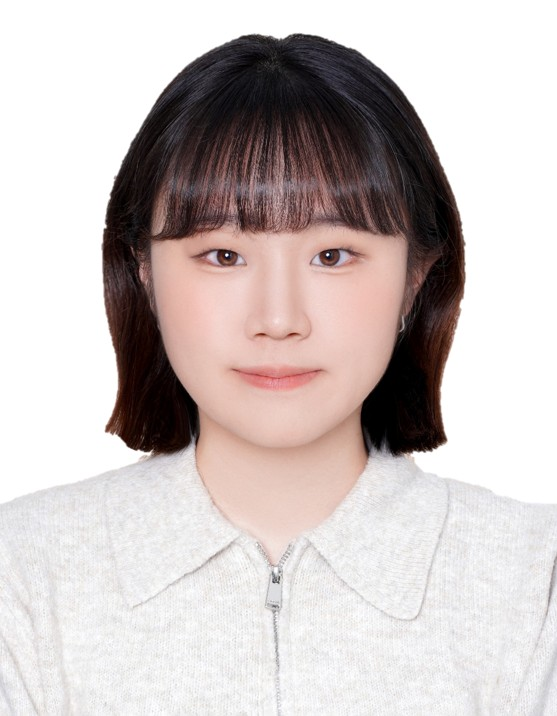

I work on multimodal reasoning and efficient 3D Gaussian splatting — cleaner multimodal reasoning, faster 3D reconstruction, and systems that are easy to understand and reuse.
Education
- Sep. 2026 – PresentM.S., Video Intelligence Lab, Kyungpook National University
- Mar. 2021 – Aug. 2026B.S. in Computer Science and Engineering, Kyungpook National University
Activities
- May 2026 – PresentMPEG (ISO/IEC JTC 1/SC 29) — WG 4 (Video Coding), WG 7 (Coding of 3D Graphics and Haptics)
Honors
- Mar. 2021 – Aug. 2025Recipient of the 19th Presidential Science Scholarship